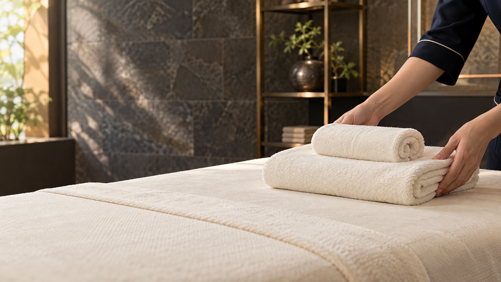
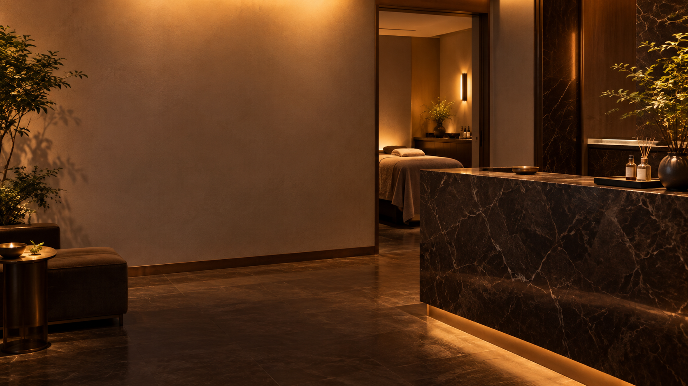

C01 · 0–3秒
QUESTION｜バストの悩み、 誰に相談する？
QUESTION
バストの悩み、誰に相談する？
箕面｜Lien Unique1/5
モデルによる演出イメージ
画・動作服を着た上半身と姿見。本人が自分の装いを見る。顔の疲労や体型変化で煽らず、相談という主題を最初に提示。
画角・見せ方明るい鏡の写真の左余白に、大きな2行見出し。
声の台本バストの悩み、誰に相談する？
テロップバストの悩み、
誰に相談する？
LIEN UNIQUE 1/5 · NEW DIRECTION · 2026.10.31
バストサロンの説明型Shortsを参考に、問いかけから始める体験紹介へ。理想を伝える → ケアを知る → 疑問を聞くの３点で、初めての来店をイメージできる構成です。
無音の構成確認用です。声の台本は各カットの下に記載しています。
画・動作服を着た上半身と姿見。本人が自分の装いを見る。顔の疲労や体型変化で煽らず、相談という主題を最初に提示。
画角・見せ方明るい鏡の写真の左余白に、大きな2行見出し。
声の台本バストの悩み、誰に相談する？
テロップバストの悩み、
誰に相談する？

画・動作新しい主人公が相談する。店名を常時小さく表示し、先に内容の見通しを示す。
画角・見せ方会話の中景。客側の自然なシルエットを含む。
声の台本初めての相談で、知っておきたい3つのこと。
テロップ初めてのバストアップ相談。
知っておきたい３つのこと。
画・動作相談カードを前に、悩みの選択肢を具体的に示す。空白のカードは後日実物に置換可能。
画角・見せ方手元と着衣の上半身。両者の顔は画面外。
声の台本ボリューム？服を着たときのライン？
テロップボリューム？
服を着たときのライン？
画・動作最初と同じ姿見に、本人の希望を重ねる。効果の感想ではなく、来店動機のモデル会話。
画角・見せ方胸まわりから腰までの服の形が分かる中景。
声の台本女性「好きな服を、もっと楽しみたくて。」
テロップ「好きな服を、
もっと楽しみたくて。」
画・動作客とスタッフの視線が合い、希望を話す。すぐ施術結果に飛ばず、対話を見せる。
画角・見せ方座った上半身。大きな字幕は下部。
声の台本まずは、その想いを相談。
テロップまずは、その想いを相談。
画・動作スタッフの説明を手元で見せる。機器の種類・施術範囲・作用は未確認なので創作しない。
画角・見せ方ペンと相談カード。施術者の顔は出さない。
声の台本どんなケアをするのか、説明を聞いてから。
テロップどんなケアをするのか、
説明を聞いてから。

画・動作新規生成した空のベッドの準備画。清潔なタオルを置く手元から、施術へつなぐ。
画角・見せ方タオルとスタッフの手のみ。
声の台本気になることを確認して、サロンケアへ。
テロップ気になることを確認して、
サロンケアへ。
施術イメージ（仮）。予定構図：鎖骨・デコルテ・肩と手元を見せ、胸の中心部はタオルで覆い、施術者の顔は映さない。実際の施術部位・機器・手順は確認が必要です。
画・動作既存の手元画像を仮使用。実施術の位置・方法は資料照合前。施術者の顔は切り出し範囲外。
画角・見せ方手元のみ。既存画像を拡大表示。
声の台本バストのための、サロンケア。
テロップバストのための、
サロンケア。
施術イメージ（仮）。予定構図：鎖骨・デコルテ・肩と手元を見せ、胸の中心部はタオルで覆い、施術者の顔は映さない。実際の施術部位・機器・手順は確認が必要です。
画・動作既存の別手元画像を仮使用。効果の比較や胸のサイズ変化は見せない。
画角・見せ方施術者の手とタオルで覆った上半身。
声の台本一人で抱えていた悩みを、相談できる時間に。
テロップ一人で抱えていた悩みを、
相談できる時間に。
画・動作新規生成した会話の別角度。具体的な価格・回数を創作せず、相談できる項目を示す。
画角・見せ方上半身の2ショット。スタッフは後ろ姿。
声の台本通い方や費用も、気になることは質問。
テロップ通い方や費用も、
気になることは質問。
画・動作新規生成した同じ女性・同じ服の装い。来店目的を表すイメージで、施術効果の実例ではない。
画角・見せ方顔のアップにせず、服のラインと姿勢を見せる。
声の台本好きな服を、自分らしく楽しむために。
テロップ好きな服を、
自分らしく楽しむために。


画・動作受領ロゴと店名。メニュー・相談への案内。未確定の予約先や料金は追加しない。
画角・見せ方店内を背景に黒・ゴールドのブランド表示。
声の台本バストアップのご相談は、リアンへ。
テロップバストアップのご相談は、
Lien Unique1/5へ。
独自に再構成・再生成した試作です。他店の映像・コピー・人物画像は使用していません。実機資料未確認のため機器名や作用の紹介は未確定です。